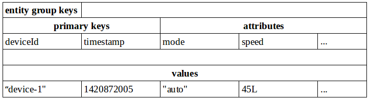

开发环境配置
开发步骤
本节将详细介绍开发者基于ablecloud提供的服务框架，快速开发自定义后端服务（UDS）和云端定时任务的流程：两者的开发流程是完全一致的。这里介绍ablecloud框架进行开发环境搭建、单元测试、集成测试以及服务发布等内容。
服务框架发布库
ablecloud一期发布java版本服务开发框架，其发布目录、文件如下所示
/config
/cloudservice-conf.xml
/lib
/ablecloud-framework-1.0.0.jar
/commons-collections-3.2.1.jar
/commons-configuration-1.10.jar
/commons-lang-2.6.jar
/slf4j-api-1.7.7.jar
/...
start.sh
start.cmd
注：所有依赖的第三方jar包，均放在lib文件夹下。其核心jar包为ablecloud的服务框架ablecloud-framework-1.0.0.jar。各jar包版本根据ablecloud发行的大版本不同可能不同。
在开发者开发完自定义服务后，需要将自定义服务编译好的jar包也放到ablecloud发布库的lib文件夹下。
本地启动命令
开发者写好服务后，可在本机启动服务进行测试集成或功能测试。
linux下在终端运行如下命令启动服务进行测试：
sh start.sh -m test
windows下在cmd中运行如下命令启动服务进行测试：
start.cmd -m test
注：启动时的参数"-m test"用于测试环境，所依赖的配置项如域名/版本等信息从config目录下的cloudservice-conf.xml配置文件中读取，开发者可以修改配置文件中的内容以适应测试环境。正式线上环境，开发者不用关心配置文件以及配置项，域名/版本等所有的信息均由框架自动获取并填充。
开发环境设置
系统准备
在进行开发前，需要对系统以及环境进行设置。目前框架只支持java语言，因此系统准备基本都是和java相关，如jdk、maven等。
-
JDK
安装JDK，建议采用1.7版本JDK
-
maven
安装maven，建议采用3.2以上版本
-
ablecloud
下载ablecloud开发框架并解压
Intellij
-
新建工程
选择新建maven工程，JDK选择正确的版本。

选择maven工程

注意jdk版本选择安装的1.7+ 点击next即可。

进入下一个页面，根据情况填写groupid/artifactid/version等信息。

填好后点击next，进入下一步，填写工程名以及存放路径。

然后点击finish完成新建工程向导。

至此，新建工程完成。
-
设置工程
按照步骤1完成了工程的新建，还需对工程属性进行一些设置以方便后续的编译、单测。 点击File -> Project Structure...

首先设置工程所使用的JDK版本1.7+和语言级别7.0

设置开发服务所要依赖的ablecloud框架包，点击+号，选择下载并解压后的ablecloud开发框架的lib目录即可。 同上，打开Project Structure...,然后选择Libraries，点击右边的+号，选择Java，如下图所示

在弹出的对话框中选择下载并解压后的ablecloud中的lib目录，并点击OK

回到上一个窗口后再次点击OK确认

这个过程中，我们可以对添加的lib库重命名（可选），例如这里重命名为ablecloud-libs。点击OK完成添加。

完成上述步骤后，我们将在工程视图里面看到新添加的该目录，如下
 )
)至此，开发者开发服务所以来的ablecloud开发框架库添加成功。
-
修改pom.xml文件
下面是一个demo的完整pom.xml文件，如下：
<?xml version="1.0" encoding="UTF-8"?> <project xmlns="http://maven.apache.org/POM/4.0.0" xmlns:xsi="http://www.w3.org/2001/XMLSchema-instance" xsi:schemaLocation="http://maven.apache.org/POM/4.0.0 http://maven.apache.org/xsd/maven-4.0.0.xsd"> <modelVersion>4.0.0</modelVersion> <groupId>com.ablecloud.demo</groupId> <artifactId>SmartHome</artifactId> <version>1.0.0</version> <properties> <ablecloud.lib.dir>/home/chenpeng/IdeaProjects/ablecloud-framework/target/lib</ablecloud.lib.dir> </properties> <build> <plugins> <plugin> <!--this plugin and dependency jars are used for testing--> <groupId>org.apache.maven.plugins</groupId> <artifactId>maven-surefire-plugin</artifactId> <version>2.18.1</version> <dependencies> <dependency> <groupId>org.apache.maven.surefire</groupId> <artifactId>surefire-junit47</artifactId> <version>2.18.1</version> </dependency> </dependencies> <configuration> <argLine>-Dmode=test</argLine> <additionalClasspathElements> <additionalClasspathElement>${ablecloud.lib.dir}/ablecloud-framework-1.0.0.jar</additionalClasspathElement> <additionalClasspathElement>${ablecloud.lib.dir}/slf4j-log4j12-1.7.7.jar</additionalClasspathElement> <additionalClasspathElement>${ablecloud.lib.dir}/slf4j-api-1.7.7.jar</additionalClasspathElement> <additionalClasspathElement>${ablecloud.lib.dir}/log4j-1.2.17.jar</additionalClasspathElement> <additionalClasspathElement>${ablecloud.lib.dir}/junit-4.11.jar</additionalClasspathElement> <additionalClasspathElement>${ablecloud.lib.dir}/hamcrest-core-1.3.jar</additionalClasspathElement> <additionalClasspathElement>${ablecloud.lib.dir}/commons-configuration-1.10.jar</additionalClasspathElement> <additionalClasspathElement>${ablecloud.lib.dir}/commons-collections-3.2.1.jar</additionalClasspathElement> <additionalClasspathElement>${ablecloud.lib.dir}/commons-lang-2.6.jar</additionalClasspathElement> <additionalClasspathElement>${ablecloud.lib.dir}/commons-logging-1.1.1.jar</additionalClasspathElement> <additionalClasspathElement>${ablecloud.lib.dir}/jetty-all-9.2.10.v20150310.jar</additionalClasspathElement> <additionalClasspathElement>${ablecloud.lib.dir}/jackson-core-2.3.2.jar</additionalClasspathElement> <additionalClasspathElement>${ablecloud.lib.dir}/jackson-annotations-2.3.2.jar</additionalClasspathElement> <additionalClasspathElement>${ablecloud.lib.dir}/jackson-databind-2.3.2.jar</additionalClasspathElement> </additionalClasspathElements> </configuration> </plugin> <plugin> <groupId>org.apache.maven.plugins</groupId> <artifactId>maven-compiler-plugin</artifactId> <version>3.3</version> <configuration> <source>1.7</source> <target>1.7</target> <encoding>UTF-8</encoding> <compilerArguments> <extdirs>${ablecloud.lib.dir}</extdirs> </compilerArguments> </configuration> </plugin> <plugin> <groupId>org.apache.maven.plugins</groupId> <artifactId>maven-jar-plugin</artifactId> <version>2.6</version> <executions> <execution> <phase>package</phase> <goals> <goal>jar</goal> </goals> </execution> </executions> <configuration> <outputDirectory>${project.build.directory}/lib</outputDirectory> </configuration> </plugin> </plugins> </build> </project>完整拷贝该示例pom.xml文件内容，其中绝大部分内容都无须修改，开发者仅需修改如下几个配置项即可：
<project> <groupId>your service group id</groupId> <artifactId>your service artifact id</artifactId> <version>your service version</version> <properties> <ablecloud.lib.dir>unzipped ablecloud lib dir where you put</ablecloud.lib.dir> </properties> </project>注意以下配置项一定不能修改，否则单测将无法通过。开发者不用担心该配置项，线上环境该配置项自动失效。
-Dmode=test -
修改配置文件
配置文件位于ablecloud发行库的config文件夹下，名字为cloudservice-conf.xml。
<?xml version="1.0" encoding="UTF-8"?> <configuration> <developer> <id>4</id> </developer> <authentication> <access-key>33df24a54054067e80af49d939b429c2</access-key> <secret-key>5e2fec3440e23c5e807910b13b672015</secret-key> <timeout>5000</timeout> </authentication> <framework> <router>192.168.1.126:5000</router> </framework> <service> <name>SmartHome</name> <class>com.ablecloud.demo.DemoService</class> <port>1234</port> <major-domain>ablecloud</major-domain> <sub-domain>demo</sub-domain> <major-version>1</major-version> <minor-version>0</minor-version> <patch-version>0</patch-version> </service> </configuration>注:开发者id，access-key，secret-key等信息，均能通过登录ablecloud测试环境的web console获取。 除了service.class配置项在测试环境和线上环境均生效外，所有的其它配置项只在测试环境有效。线上服务将忽略配置文件中的配置项。
-
编译单测
在IDE的终端（terminal）或系统终端中运行命令
mvn package即可完整的执行编译、单元测试（如果写了单测代码的话）。 -
本地运行
如果编译、单测都没有问题，则将编译出来的服务jar包（在服务工程主目录下的target/lib目录下）拷贝到ablecloud框架的lib目录下，在ablecloud的框架主目录执行ablecloud提供的脚本
sh start.sh -m test或start.cmd -m test，即可在您的开发机上启动您编写好的服务程序。注：在本机上运行服务测试时必须加-m test参数，否则无法启动服务。服务启动所需的参数，如域名、版本、端口等信息均在xml的配置文件中设置。
-
提交到平台
将你编译好的服务jar包（位于你服务代码主目录下的target/lib文件夹中，如
~/SmartHome/target/lib/SmartHome-1.0.0.jar）放入ablecloud框架的lib目录下，然后将ablecloud的config目录、lib目录、start.sh打成zip包，通过ablecloud的web平台提交。
Eclipse
-
新建工程
选择File-->New-->Project...

选择maven工程

点击Next进入下一步

填写groupId,artifactId,version等信息，并点击Finish完成新建工程。

-
设置工程 在工程视窗右键点击步骤1中新建的工程进行工程设置。或者点击菜单栏Project-->Properties进行设置

首先设置工程对ablecloud发行库的依赖。如图选择Java Build Path的Libaries标签页，点击Add Library...

在Add Library页选择User Library

继续点击User Libraries...按钮

然后点击New...新建一个用户library文件夹

这里可以给该用户lib重命名，如图中命名为ablecloud-libs，点击OK完成

回到User Libraries页面，点击右方的Add External JARs...按钮，选择下载并解压的ablecloud发行库中的lib目录，将该目录中所有的jars添加到新建的user library中。

勾选上新建的user library，并点击Finish将ablecloud的jars添加到新建的工程中。

下面进行java语言的设置，类似上面的设置，先进入Properties窗口，选择Java Compiler，去掉默认的Use compliance from execution environment...，并且选择Compiler compliance level为1.7

-
修改pom.xml文件
同intellij章节
-
修改配置文件
同intellij章节
-
编译单测
TBD
-
本地运行
同intellij章节
-
提交到平台
同intellij章节
基础数据结构
在具体讲解ACMsg和ACDeviceMsg之前，先介绍两个重要的基础数据结构：
ACContext： 即上下文。有了交互消息，就可以在多个模块之间进行通信。为了标记每一次交互（比如发起者、发起时间、签名等），也为了追踪通信事件，所有交互消息中均需要带有上下文信息。
ACObject：ACMsg的格式本质上是json，服务开发框架以及APP端的SDK在传输过程均会对其进行序列化/反序列化，也就是开发者能直接从ACMsg中put进/get出具体的某个值。
无论什么格式的数据，终归是需要由某种数据结构来表示，ablecloud采用ACObject来承载ACMsg中json格式的具体数据。
ACContext
说明：ACContext中包含两种用户信息：
- userId：设备的终端（普通）用户id，比如用户在手机上通过app控制某一设备时，context中需要带上该用户的id，后台程序用于认证等之用。当用户通过云服务发起远程控制时，云服务程序透传用户的context。
- developerId：开发者id。当某一服务开发好上线后，一方面接收APP或设备发来的消息，另一方面可能自主的执行例行巡检任务。当在巡检过程中自主的对后台服务发起请求时，context中并不会有userId等终端用户的信息，此时服务创建的context需要填充developerId的值。
public class ACContext {
private String majorDomain; // 服务所属主域名
private String subDomain; // 服务所属子域名
private Long userId; // 用户id
private Long developerId; // 开发者id
private String traceId; // 唯一事件id，可用于追查问题
private String traceStartTime; // 起始时间
private String timestamp; // 请求发起的时间戳，单位秒
private String signature; // 请求的签名
private String timeout; // 为防止签名被截获，设置签名的有效超时时间
private String nonce; // 用于签名的随机字符串
private String accessKey; // 开发者的accesskey，用于签名之用
// setter
// getter
}
注：上下文context有一个重要的特性是，在其生成后的所有交互中，都不能更改其已有字段的值，可以添加还没有赋值的字段。比如有终端用户发起的请求中带有userId，请求到达云服务端时，云服务可以往该context中设置developerId的值，但不能修改其它值。否则就失去了追踪每一次交互的意义了。 开发者不应该直接用ACContext的构造函数构造上下文，而是使用AC框架的相关接口创建上下文对象，后面会有详细描述。
ACObject
ACObject用于承载交互的具体数据，我们称之为payload（负载）。上文提到通过put存入ACObject的数据内部以json方式处理，因此ACObject中的某一value也可以是嵌套的ACObject，能满足大部分需求场景。
public class ACObject {
private HashMap<String, Object> data = new HashMap<String, Object>();
/**
* 设置一个参数
* @param key 参数名
* @param <T> 参数值
* @return
*/
public <T> ACObject put(String key, T value) {}
/**
* 添加一个参数，该参数添加到一个List中
* @param key 参数所在List的名字
* @param value 参数值
public ACObject add(String key, Object value) {}
/**
* 获取一个参数值
* @param key 参数名
* @return 参数值
*/
public <T> T get(String key) {}
/**
* 检查某一key是否存在
* @param key 参数名
* @return 存在返回true，否则返回false
*/
public boolean contains(String key) {}
}
注：最常用的三个接口是put/add/get，通过add接口保存在ACObject中的数据实际为List，相应的，get出来也是一个List。
交互消息
多个模块、服务之间都通过消息message来通信。ablecloud定义了两种格式的消息：
- ACMsg：APP与service，service与service之间的交互消息。
- ACDeviceMsg：APP与device，service与device之间的交互消息。
ACMsg
ACMsg继承自ACObject，扩展了一些功能，比如设置了交互的方法名name、交互的上下文context以及其它形式的负载payload信息。通常采用ACMsg进行数据交互，较多的使用默认的OBJECT_PAYLOAD格式，该格式只需要使用ACObject提供的put、add、get接口进行数据操作即可。因为在使用OBJECT_PAYLOAD格式时，框架会对数据进行序列化/反序列化。ACMsg也提供另外的数据交互格式，如json、stream等。如果用json格式，则通过setPayload/getPayload设置/获取序列化后的json数据并设置对应的payloadFormat，开发者后续可自行对payload进解析。
public class ACMsg extends ACObject {
public static final String OBJECT_PAYLOAD = "application/x-zc-object";
public static final String JSON_PAYLOAD = "text/json";
public static final String STREAM_PAYLOAD = "application/octet-stream";
private String name;
private ACContext context;
private String payloadFormat;
private byte[] payload;
private int payloadSize;
private InputStream streamPayload;
public ACMsg() {}
/**
* 设置请求方法名，服务端将根据该方法名进行处理
* @param name 方法名
*/
public void setName(String name) {}
/**
* 获取方法名
* @return
*/
public String getName() {}
/**
* 获取交互上下文
* @return
*/
public ACContext getContext() {}
/**
* 设置交互上下文
* @param context
*/
public void setContext(ACContext context) {}
/**
* 获取负载格式
* @return
*/
public String getPayloadFormat() {}
/**
* 获取二进制负载
* @return
*/
public byte[] getPayload() {}
/**
* 获取负载大小
* @return
*/
public int getPayloadSize() {}
/**
* 设置二进制负载
* 通过put/add方式设置的负载要么框架将其序列化为json，
* 要么解析后作为url的参数传输。
* 通过该函数可以设置额外的负载数据，比如传统的序列化后的json值。
* @param payload
* @param format
*/
public void setPayload(byte[] payload, String format) {}
/**
* 设置流式负载，主要用于较大的数据传输，如上传文件等。
* @param payload 负载内容
* @param size 负载大小
*/
public void setStreamPayload(InputStream payload, int size) {}
/**
* 获取流式负载
* @return
*/
public InputStream getStreamPayload() {}
/**
* 关闭流式负载。
* 通过getStreamPayload拿到流式负载后，需要显示的关闭。
* @throws IOException
*/
public void closeStreamPayload() throws IOException {}
/**
* 设置错误信息。在服务端处理错误时，需要显示的调用该结果设置错误信息
* @param errCode 错误码
* @param errMsg 错误信息
*/
public void setErr(Integer errCode, String errMsg) {}
/**
* 判断服务端响应的处理结果是否有错
* @return true-处理有错，false-处理成功
*/
public boolean isErr() {}
/**
* 获取错误码
* @return
*/
public Integer getErrCode() {}
/**
* 获取错误信息
* @return
*/
public String getErrMsg() {}
/**
* 服务端处理成功后，调用该方法
*/
public void setAck() {}
}
注：开发者在本地测试或联调时，需要在配置文件中设置context的相关信息（见配置示例），线上环境context的内容由服务框架获取，开发者可不用关注。 客户端往后端服务发送消息，服务向另一服务发送消息的时候，均需要对所发请求进行签名，具体的签名算法见附录。
使用示例
client端发起请求（伪代码，完整代码请参看各部分demo）：
ACContext context = ac.newContext(account.getUid()); // 通过框架构造一个用户context
ACMsg req = new ACMsg(); // 创建一个空请求消息
req.setContext(context); // 设置请求上下文
req.setName("controlLight"); // 设置请求消息名
req.put("deviceId", light.getId()); // 设置一个请求属性“设备id”
req.put("action", "on"); // 设置另一属性"动作“，开灯
ACMsg resp = client.send(req); // 发送请求并返回服务端响应
服务端处理请求（伪代码，完整代码请参看各部分demo）：
private void handleControlLight(ACMsg req, ACMsg resp) throws Exception {
Long lightId = req.get("deviceId"); // 从请求中获取“设备id”
String action = req.get("action"); // 从请求中获取“动作”
// do something
}
ACDeviceMsg
说明：该消息用于处理服务和设备之间的交互，框架会将ACDeviceMsg中的code部分解析出来，开发者可根据code来区分设备消息类型。但是ACDeviceMsg的content部分由开发者解释，框架透传，因此开发者需要自己编写设备消息序列化/反序列化器。ACDeviceMsg定义如下：
public class ACDeviceMsg {
private int code; // 消息码，用于区分消息类型
private Object content; // 设备消息的具体内容
public ACDeviceMsg() {}
public ACDeviceMsg(int code, Object content) {}
public int getCode() {}
public void setCode(int code) {}
public Object getContent() {}
public void setContent(Object content) {}
}
注：设备消息的具体内容为Object类型，开发者根据实际情况实现序列化器用来解释content的内容，在作具体的序列化/反序列化时，可根据code的不同值做出不同的序列化行为。
ACDeviceMsgMarshaller
说明：设备消息的序列化/反序列化器，用于解释ACDeviceMsg的内容，其定义如下：
public interface ACDeviceMsgMarshaller {
/**
* 将具体的ACDeviceMsg序列化成字节数组，用于控制设备时通过网络传输给设备
*
* @param msg 设备消息
* @return 序列化后的字节数组
* @throws Exception
*/
public byte[] marshal(ACDeviceMsg msg) throws Exception;
/**
* 将通过网络收到的字节数组数据，反序列化成具体的消息，以便从消息中提取各个字段。
*
* @param msgCode 消息码，ablcloud也称为操作码opCode
* @param payload 设备消息序列化后的字节数组
* @return 设备消息
* @throws Exception
*/
public ACDeviceMsg unmarshal(int msgCode, byte[] payload) throws Exception;
}
服务开发框架
ACService
说明： AbleCoud定义了抽象基类ACService，开发者只需要继承该类，并实现各个handler即可。总共有三个公共接口，其中init提供了默认实现。如果开发者实现的某一服务不需要和设备直接交互，则直接重载handleDeviceMsg为空实现即可。通常情况下，init也无需重载。因此，开发者可以将精力集中在handleMsg接口的实现中，该接口处理客户端请求，并作出响应。定义如下:
public abstract class ACService {
// ac是非常重要的ablecloud云框架服务，ablecloud提供了默认实现ACCloud，
// 开发者可以调用ac的相关接口直接调用ablecloud提供的云服务，后文会有详述
protected AC ac;
// 以下信息可用于服务内部追踪问题等用，比如打印到日志中
protected long developerId; // 开发者id
protected String majorDomain; // 服务的主域名
protected String subDomain; // 服务的子域名
protected int majorVersion; // 服务的主版本号
protected int minorVersion; // 服务的副版本号
protected int patchVersion; // 服务的修订版本号
/**
* 开发者可根据自身需要，重载该方法，在该方法里做一些初始化工作，框架在启动服务时会调用该函数。
* 比如，该服务要处理和设备之间的交互消息，需要自定义设备消息的序列化/反序列化器
* ACDeviceMsgMarshaller，在init函数内将marshaller设置到ac中。
*
* @throws Exception
*/
public void init() throws Exception {}
/**
* 处理APP-->Service，Service-->Service之间的交互消息
* @param req 请求消息体
* @param resp 响应消息体
* @throws Exception
*/
public abstract void handleMsg(ACMsg req, ACMsg resp) throws Exception;
/**
* 处理Device-->Service之间的交互消息
* 如果服务不处理和设备之间的交互消息，则无须重载该方法。
*
* 当前，处理设备汇报的消息不做响应。
*
* @param context 设备的上下文，其中uid字段为系统填充
* @param deviceId 设备的逻辑id
* @param req 请求消息体
* @throws Exception
*/
public abstract void handleDeviceMsg(ACContext context, long deviceId, ACDeviceMsg req) throws Exception;
/**
* 内部调用接口，开发者不用关注且不能修改。
* 设置服务相关的信息，并将全局AC框架传给服务
* 服务内部可以使用AC框架提供的各种功能，如
* 帐号管理、设备管理、存储服务等。
* @param ac
* @param config
*/
public final void setEnv(AC ac, ACConfiguration config) {}
/**
* 内部调用接口，开发者不用关注且不能修改。
* @return
*/
public final AC getAc() {}
}
注：通常情况下，开发者只需要重点实现handleMsg即可。
AC
说明：在介绍ACService的时候提到过重要的成员变量ac，ac实际上是ablecloud对抽象服务框架AC的具体实现，其实现过程对开发者透明。通过AC，开发者可以根据需要获取一系列内嵌服务的功能接口。AC的定义如下：
public abstract class AC {
protected ACConfiguration config;
protected ACDeviceMsgMarshaller deviceMsgMarshaller;
/**
* 初始化框架
* @param config 配置信息
*/
public void init(ACConfiguration config) {}
/**
* 构建一个开发者上下文
* @return
*/
public ACContext newContext() {}
/**
* 构建一个用户上下文
* @param userId
* @return
*/
public ACContext newContext(long userId) {}
/**
* 则用于创建数据分类/清空数据等操作。
* 用于测试之用。
*
* @return
*/
public abstract ACStoreForTest storeForTest(ACContext context);
/**
* 用于对数据分类进行具体的操作，如create/find/delete/update/scan等
*
* @param className 要操作的分类名
* @param context 要进行操作的开发者context
* @return
*/
public abstract ACStore store(String className, ACContext context);
/**
* 直接往设备发送命令/消息
* @param subDomain 子域名，比如thermostat
* @param deviceId 设备逻辑id
* @param reqMsg 具体的消息内容
* @param context 如果通过app端发送消息到服务，服务在中继给设备，
* 则服务在发送给设备的时候需要带上app端的用户context。
* 如果是服务自主发送控制命令给设备，则需要传入开发者的context。
* @return 设备返回的消息
* @throws Exception
*/
public abstract ACDeviceMsg sendToDevice(String subDomain, long deviceId,
ACDeviceMsg reqMsg, ACContext context) throws Exception;
/**
* 往某一服务发送命令/消息
* @param name 服务名
* @param version 服务版本
* @param req 具体的消息内容
* @return 服务端相应的消息
* @throws Exception
*/
public abstract ACMsg sendToService(String name, int version, ACMsg req) throws Exception;
/**
* 获取设备管理器。开发者在实现自定义服务时，
* 可以调用ACDeviceMgr提供的各个通用接口
*
* @param context 用户的context
* @return
*/
public abstract ACDeviceMgr deviceMgr(ACContext context);
/**
* 获取用于单元测试的设备管理器，可以创建分组/绑定设备等
*
* @param context 用户的context
* @return
*/
public abstract ACDeviceMgrForTest deviceMgrForTest(ACContext context);
/**
* 获取帐号管理器。开发者组实现自定义服务时，
* 可以调用ACAccountMgr提供的各个通用接口
*
* @param context 开发者的context
* @return
*/
public abstract ACAccountMgr accountMgr(ACContext context);
/**
* 获取用于单元测试的帐号管理器，可以注册用户等
*
* @param context 开发者的context
* @return
*/
public abstract ACAccountMgrForTest accountMgrForTest(ACContext context);
/**
* 获取通知管理器，可以给用户发送通知消息
*
* @param context 开发者的context
* @return
*/
public abstract ACNotificationMgr notificationMgr(ACContext context);
/**
* 为便于测试，开发者可实现一个服务的桩
* 在框架中添加一个服务桩
*
* @param name 服务名
* @param stub 服务桩的实现，实际上也是一个ACService
*/
public abstract void addServiceStub(String name, ACService stub);
/**
* 为便于测试，开发者可实现一个设备的桩
*
* @param subDomain 设备所属子域
* @param stub 设备桩
*/
public abstract void addDeviceStub(String subDomain, ACDeviceStub stub);
/**
* 如果服务要处理和设备之间的交互消息，需要实现设备消息序列化/反序列化器
* 该接口将序列化/反序列化器设置给ac框架
*
* @param marshaller 设备消息序列化/反序列化器
*/
public void setDeviceMsgMarshaller(ACDeviceMsgMarshaller marshaller) {}
/**
* 获取设备消息序列化/反序列化器
* @return
*/
public ACDeviceMsgMarshaller getDeviceMsgMarshaller() {}
/**
* 获取用于单元测试的服务框架ac
* @param config 单元测试环境构造的config
* @return
* @throws Exception
*/
public static final AC getTestAc(ACConfiguration config) throws Exception {}
}
内嵌云端服务
顾名思义，内嵌云端服务，是指ablecloud抽象并实现的多种通用后端服务，避免开发者重复开发这些基础设施。开发者可直接使用这些服务，降低应用服务程序的开发代价，提高开发效率。各个云端服务的对象通过上节介绍的服务框架AC的相关接口获取。
账号管理服务
该服务用于管理和某一智能设备相关的用户，比如查看用户的基本信息/状态等。发现异常用户时，服务程序能及时做出相应操作。
获取方式
ACAccountMgr accountMgr = ac.accountMgr(ACContext context);
接口说明
当前提供接口较少，后续会进一步丰富。
public interface ACAccountMgr {
/**
* 根据用户的id，查找用户信息
* @param accountId
* @throws Exception
*/
public ACAccount getAccountInfo(long accountId) throws Exception;
}
存储服务
该服务为开发者提供了一个通用的key-value存储系统服务。开发者可用此服务存储自定义数据。
获取方式
ACStore store = ac.store(String className, ACContext contexte);
存储模型
ablecloud目前提供基于sql的存储服务，开发者需要预先设定数据集的结构，同时可以选择对数据进行分区或不分区。因此如何定位数据所在分区，需要提供分区key，ablecloud称其为entity group key。当我们要查找一条存储在ablecloud中的数据时，需要提供其key值，通过key值定位到具体的数据，这种用于定位具体数据的key，ablecloud称其为primary key。
注：entity group key必须是primary key的前缀，可以相同。
存储模型示例如下： 
从上图我们可以看到，定义的一个存储模型如下：
- entiry group keys：deviceId，类型为字符串
String。 - primary keys：deviceId，类型为字符串；timestamp，类型为整型
Long。 - attributes：mode，类型为字符串；speed，类型为整型
Long。
注：目前所有的整型，都统一支持Long，浮点型统一为Double，字符串型可以设定字符串长度
接口说明
数据查询过滤器ACFilter： 独立于数据集之外，同一个过滤器可用于在不同的数据集中进行数据查询过滤。
获取方式： ACFilter filter = ac.filter();
public class ACFilter {
// 各种关系连接符
public static long INVALID = 0;
public static long EQUAL = 1; // 等于
public static long NOT_EQUAL = 2; // 不等于
public static long GREATER = 3; // 大于
public static long GREATER_OR_EQUAL = 4; // 大于等于
public static long LESS = 5; // 小于
public static long LESS_OR_EQUAL = 6; // 小于等于
// 向查询过滤器中添加等于表达式
public ACFilter whereEqualTo(String key, Object value);
// 向查询过滤器中添加不等于表达式
public ACFilter whereNotEqualTo(String key, Object value);
// 向查询过滤器中添加大于表达式
public ACFilter whereGreaterThan(String key, Object value);
// 向查询过滤器中添加大于等于表达式
public ACFilter whereGreaterThanOrEqualTo(String key, Object value);
// 向查询过滤器中添加小于表达式
public ACFilter whereLessThan(String key, Object value);
// 向查询过滤器中添加小于等于表达式
public ACFilter whereLessThanOrEqualTo(String key, Object value);
}
全表扫描FullScan的数据游标ACIterator： 注意ACIterator仅用于进行了分区的数据集，对于未分区的数据集，请直接使用Scan接口。
public class ACIterator {
// 从游标中取出下一份数据结果集，每一份结果集对应一个分区键
public List<ACObject> next() throws Exception;
// 获取游标当前所在的分区键
public ACObject currentEntityGroup();
}
public abstract class ACStore {
// 各数据类型
public static long INVALID_TYPE = 0;
public static long INT_TYPE = 1; // 整型数据，目前统一为Long
public static long FLOAT_TYPE = 2; // 浮点型数据，目前统一为double
public static long BOOL_TYPE = 3; // 布尔型数据
public static long STRING_TYPE = 4; // 字符串类型数据
public static long OBJECT_TYPE = 5; // 对象数据
public static long ARRAY_TYPE = 6; // 数组/列表型数据
// 查询过滤器的连接符
public static long INVALID_CONNECTOR = 0;
public static long AND = 1; // 表示过滤器之间“且”的关系
public static long OR = 2; // 表示过滤器之间“或”的关系
// 数据排序的参数
public static long INVALID_ORDER = 0;
public static long ASC = 1; // 正序排序
public static long DESC = 2; // 倒序排序
// 创建一条数据
public interface Create {
// 将key, value写入client端内存，可以连续调用put
public Create put(String key, Object value) throws Exception;
// 该接口最终将client端的key-value(s)写入ablecloud的存储服务
public void execute() throws Exception;
}
// 查找数据
public interface Find {
// 设置查找的keys，可以不调用。如果不掉用select，则
// 返回primary key所对应的所有attributes
public Find select(String... keys);
// 该接口最终从ablecloud的存储服务进行查找并返回数据
public ACObject execute() throws Exception;
}
// 删除数据
public interface Delete {
// 该接口最终从ablecloud的存储服务中删除数据
public void execute() throws Exception;
}
// 批量删除数据
public interface BatchDelete {
// 设置第一个用于删除的条件过滤器，不允许重复调用
public BatchDelete where(ACFilter filter);
// 追加设置一个条件过滤器，与之前过滤器的关系是“且”，必须在where之后调用
// 注意在追加过滤器时，and的优先级高于or
public BatchDelete and(ACFilter filter);
// 追加设置一个条件过滤器，与之前过滤器的关系是“或”，必须在where之后调用
public BatchDelete or(ACFilter filter);
// 该接口最终从ablecloud的存储服务中删除数据
public void execute() throws Exception;
}
// 更新数据
public interface Update {
// 将已存在的key设置新的value值，可以连续调用put
public Update put(String key, Object value);
// 该接口最终将client端的key-value(s)写入ablecloud的存储服务
public void execute() throws Exception;
}
// 替换数据，和update的区别是，update只能更改已经存在的attributes，而
// replace可以设置全新的attributes
public interface Replace {
// 同Create的put
public Replace put(String key, Object value);
// 同Create的execute
public void execute() throws Exception;
}
// 扫描数据
public interface Scan {
// 设置需要返回的keys，类似find的select
public Scan select(String... keys);
// 设置扫描的起始点，需传入除entity group key之外的primary keys
// 不调用该接口默认从头开始扫描
public Scan start(Object... primaryKeys) throws Exception;
// 设置扫描的结束点，需传入除entity group key之外的primary keys
// （end需要和start一起使用，不能单独出现）
public Scan end(Object... primaryKeys) throws Exception;
// 设置扫描数据最大值
public Scan limit(int number);
// 设置第一个查询过滤器，不允许重复调用
public Scan where(ACFilter filter);
// 追加设置一个查询过滤器，与之前过滤器的关系是“且”，必须在where之后调用
// 注意在追加过滤器时，and的优先级高于or
public Scan and(ACFilter filter);
// 追加设置一个查询过滤器，与之前过滤器的关系是“或”，必须在where之后调用
public Scan or(ACFilter filter);
// 按照参数列表中的顺序，对各字段进行正向排序，可重复调用
public Scan orderByAsc(String... keys);
// 按照参数列表中的顺序，对各字段进行逆向排序，可重复调用
public Scan orderByDesc(String... keys);
// 按照参数列表中的顺序，对各字段进行分组，可重复调用
public Scan groupBy(String... keys);
// 统计结果集或者其中各个分组的记录数量
public Scan count();
// 按照参数列表中的顺序，对各字段在结果集或者各分组中的值分别统计求和，结果值将以Double型呈现
public Scan sum(String... keys);
// 按照参数列表中的顺序，对各字段在结果集或者各分组中的值分别统计求平均值，结果值将以Double型呈现
public Scan avg(String... keys);
// 按照参数列表中的顺序，对各字段在结果集或者各分组中的值分别统计求最大值
public Scan max(String... keys);
// 按照参数列表中的顺序，对各字段在结果集或者各分组中的值分别统计求最小值
public Scan min(String... keys);
// 该接口最终从ablecloud的存储服务中扫描数据，返回数据列表。
public List<ACObject> execute() throws Exception;
}
// 基于entity group key（分区键）的全表扫描，每次处理一个数据分区的数据并返回结果集
public interface FullScan {
// 设置需要返回的keys，类似find的select
public FullScan select(String... keys);
// 设置扫描的起始点，需传入除entity group key之外的primary keys
// 不调用该接口默认从头开始扫描（start和end至少需要调用一个）
public FullScan start(Object... primaryKeys) throws Exception;
// 设置扫描的结束点，需传入除entity group key之外的primary keys
// 不掉用该接口默认扫描到末尾（start和end至少需要调用一个）
public FullScan end(Object... primaryKeys) throws Exception;
// 设置扫描数据最大值
public FullScan limit(int number);
// 设置第一个查询过滤器，不允许重复调用
public FullScan where(ACFilter filter);
// 追加设置一个查询过滤器，与之前过滤器的关系是“且”，必须在where之后调用
// 注意在追加过滤器时，and的优先级高于or
public FullScan and(ACFilter filter);
// 追加设置一个查询过滤器，与之前过滤器的关系是“或”，必须在where之后调用
public FullScan or(ACFilter filter);
// 按照参数列表中的顺序，对各字段进行正向排序，可重复调用
public FullScan orderByAsc(String... keys);
// 按照参数列表中的顺序，对各字段进行逆向排序，可重复调用
public FullScan orderByDesc(String... keys);
// 按照参数列表中的顺序，对各字段进行分组，可重复调用
public FullScan groupBy(String... keys);
// 统计结果集或者其中各个分组的记录数量
public FullScan count();
// 对各字段在结果集或者各分组中的值分别统计求和，结果值将以Double型呈现，参数顺序不敏感
public FullScan sum(String... keys);
// 对各字段在结果集或者各分组中的值分别统计求平均值，结果值将以Double型呈现，参数顺序不敏感
public FullScan avg(String... keys);
// 对各字段在结果集或者各分组中的值分别统计求最大值，参数顺序不敏感
public FullScan max(String... keys);
// 对各字段在结果集或者各分组中的值分别统计求最小值，参数顺序不敏感
public FullScan min(String... keys);
// 该接口最终从ablecloud的存储服务中扫描数据，返回各分区的数据游标供调用者使用
public ACIterator execute() throws Exception;
}
// 简单全表扫描，基于用户每次设定的limit
public interface SimpleFullScan {
// 设置需要返回的keys，类似find的select
public SimpleFullScan select(String... keys);
// 设置第一个查询过滤器，不允许重复调用
public SimpleFullScan where(ACFilter filter);
// 追加设置一个查询过滤器，与之前过滤器的关系是“且”，必须在where之后调用
// 注意在追加过滤器时，and的优先级高于or
public SimpleFullScan and(ACFilter filter);
// 追加设置一个查询过滤器，与之前过滤器的关系是“或”，必须在where之后调用
public SimpleFullScan or(ACFilter filter);
// 该接口最终从ablecloud的存储服务中扫描数据，返回数据游标供调用者使用，调用者需要每次给定一个数据条数limit
public ACRowIterator execute() throws Exception;
}
/**
* 创建数据写入对象
* @param primaryKeys 完整的primary keys包括entity group keys
*
* @notice 不定参数primaryKeys可以有两种形态，如果是key-value对的方式
* k-v必须是成对出现。也可以传入一个ACObject对象，此时只能传入
* 一个参数，并且ACObject对象中需要将所有的primary key的value
* 值put进去。
* @return
*/
public abstract Create create(Object... primaryKeys);
/**
* 创建数据查找对象
* @param primaryKeys 同create的参数primaryKeys
* @return
*/
public abstract Find find(Object... primaryKeys);
/**
* 创建数据删除对象
* @param primaryKeys 同create的参数primaryKeys
* @return
*/
public abstract Delete delete(Object... primaryKeys);
/**
* 创建数据批量删除对象
* @param entityKeys 完整的entity group keys
* @notice 不定参数entityKeys可以有两种形态，如果是key-value对的方式
* k-v必须是成对出现。也可以传入一个ACObject对象，此时只能传入
* 一个参数，并且ACObject对象中需要将所有的entity group key的
* value值put进去。
* @return
*/
public abstract BatchDelete batchDelete(Object... entityKeys);
/**
* 创建数据更新对象
* @param primaryKeys 同create的参数primaryKeys
* @return
*/
public abstract Update update(Object... primaryKeys);
/**
* 创建数据替换对象
* @param primaryKeys 同create的参数primaryKeys
* @return
*/
public abstract Replace replace(Object... primaryKeys);
/**
* 创建数据扫描对象
* @param entityKeys 对于已分区的数据集，需要传入完整的entity group keys；
* 对于未分区的数据集，不需要传入任何参数；
* @notice 不定参数entityKeys可以有两种形态，如果是key-value对的方式
* k-v必须是成对出现。也可以传入一个ACObject对象，此时只能传入
* 一个参数，并且ACObject对象中需要将所有的entity group key的
* value值put进去。
* @return
*/
public abstract Scan scan(Object... entityKeys);
/**
* 创建全表数据扫描对象，基于数据分区
* @return
*/
public abstract FullScan fullScan();
/**
* 创建简单全表数据扫描对象
* @return
*/
public abstract SimpleFullScan simpleFullScan();
}
使用示例
以数据集"test_data"为例，假定其分区键为"deviceId"（字符串型）；主键为"deviceId"（字符串型）和"timestamp"（整型）；其他字段包括"status"（字符串型）、"mode"（字符串型）、"speed"（整型）和"pm25"（浮点型）等。
Create
方式一：显示的传入primary keys的k-v对
ac.store("test_data", context).create("deviceId", "12345", "timestamp", 1L) // 这里是k-v对
.put("status", "run")
.put("mode", "auto")
.put("speed", 45L)
.put("pm25", 35.5)
.execute();
方式二：传入primary keys的对象
ACObject pk = new ACObject();
pk.put("deviceId", "12345");
pk.put("timestamp", 1L);
ac.store("test_data", context).create(pk) // 这里是primary keys的对象
.put("status", "run")
.put("mode", "auto")
.put("speed", 45L)
.put("pm25", 35.5)
.execute();
Find
ACObject ao = ac.store("test_data", context)
.find("deviceId", "12345", "timestamp", 1L)
.execute();
String status = ao.get("status");
String mode = ao.get("mode");
Long speed = ao.get("speed");
Scan
由于是分区数据集，在Scan时需要传入分区键值对，这里是"deviceId"及其值。注意如果是非分区的数据集，则调用scan接口时不需要传入参数，如ac.store("test_data", context).scan()...
示例一：设定start和limit，由start开始正向扫描，返回limit数量的结果集，其中各数据记录按主键自然正序排列
ac.store("test_data", context).scan("deviceId", "12345")
.start("timestamp", 1L)
.limit(10)
.execute();
示例二：设定start和end，由start开始正向扫描到end，返回start和end之间的结果集，其中各数据记录按主键自然正序排列
ac.store("test_data", context).scan("deviceId", "12345")
.start("timestamp", 1L)
.end("timestamp", 10L)
.execute();
示例三：设定end和limit，由end开始逆向扫描，返回limit数量的数据集，注意其中各数据记录按主键倒序排列。
注：我们经常遇到的获取设备最新的n条数据的需求就可以用这个接口组合来实现。
ac.store("test_data", context).scan("deviceId", "12345")
.end("timestamp", 10L)
.limit(10)
.execute();
示例四：指定查询过滤器进行查询
// 查询条件1：状态是正在运行并且转速大于等于300
ACFilter f1 = ac.filter().whereEqualTo("status", "running")
.whereGreaterThanOrEqualTo("speed", 300L);
// 查询条件2：状态是已停止并且PM2.5监控值小于50.0
ACFilter f2 = ac.filter().whereEqualTo("status", "stopped")
.whereLessThan("pm25", 50.0);
// 查询设备ID为"12345"的设备在一段时间内所有满足条件1或条件2的数据记录
ac.store("test_data", context).scan("deviceId", "12345")
.start("timestamp", 1L)
.end("timestamp", 10L)
.where(f1)
.or(f2)
.execute();
示例五：指定查询过滤器进行查询并排序，注意排序的各字段之间有优先级关系，在参数列表中越靠前优先级越高
// 查询条件：状态是正在运行
ACFilter f = ac.filter().whereEqualTo("status", "running");
// 查询设备ID为"12345"的设备在一段时间内所有满足条件的数据记录并按照转速（正序）、PM2.5监控值（倒序）以及时间戳（倒序）排序
// 本示例的意图为：查询设备ID为"12345"的设备在"1L"到"10L"这段时间内所有正在运转时上报的数据，同时进行排序，转速越低越靠前，转速相同的PM2.5越高越靠前，PM2.5也相同的时间越近越靠前
ac.store("test_data", context).scan("deviceId", "12345")
.start("timestamp", 1L)
.end("timestamp", 10L)
.where(f)
.orderByAsc("speed")
.orderByDesc("pm25", "timestamp")
.execute();
示例六：分组并进行简单的数值统计
/*
将设备ID为"12345"的设备在一段时间内的数据记录按照运行状态和控制模式分组，假设有四种情况：
-------------------------
| status | mode |
-------------------------
| running | auto |
-------------------------
| running | manual |
-------------------------
| stopped | auto |
-------------------------
| stopped | manual |
-------------------------
本示例的意图为：统计设备ID为"12345"的设备在"1L"到"10L"这段时间内所有上报的数据，按照"status"和"mode"分组，统计每个分组的记录总数、合计转速、平均转速和平均PM2.5以及最大转速和最大PM2.5.
*/
ac.store("test_data", context).scan("deviceId", "12345")
.start("timestamp", 1L)
.end("timestamp", 10L)
.groupBy("status", "mode")
.count()
.sum("speed")
.avg("speed", "pm25")
.max("speed", "pm25")
.execute();
示例七：复杂示例，各接口之间限制比较少，可以灵活组合来满足需求
// 将设备ID为"12345"的设备在一段时间内满足查询条件的数据记录进行分组、排序和聚合
ACFilter f1 = ac.filter().whereGreaterThan("speed", 0L)
.whereLessThan("speed", 50L);
ACFilter f2 = ac.filter().whereGreaterThanOrEqualTo("speed", 300L);
ACFilter f3 = ac.filter().whereLessThan("pm25", 30.0);
ac.store("test_data", context).scan("deviceId", "12345")
.start("timestamp", 1L)
.end("timestamp", 100L)
.where(f1)
.or(f2)
.or(f3)
.groupBy("status", "mode")
.orderByAsc("status", "mode")
.count()
.max("speed")
.min("speed", "pm25")
.execute();
FullScan
分区数据集还可以调用FullScan接口得到全表扫描的Iterator，每次调用Iterator的next()方法得到下一个有数据记录存在的分区中的数据，注意各分区间不保证有序！ 同时注意全表扫描过程中Iterator会自动跳过没有数据的分区，整个扫描结束的条件是next()方法返回为空
// 延续Scan示例七中的查询条件进行全表所有分区的扫描
ACFilter f1 = ac.filter().whereGreaterThan("speed", 0L)
.whereLessThan("speed", 50L);
ACFilter f2 = ac.filter().whereGreaterThanOrEqualTo("speed", 300L);
ACFilter f3 = ac.filter().whereLessThan("pm25", 30.0);
ACIterator it = ac.store("test_data", context).fullScan()
.start("timestamp", 1L)
.end("timestamp", 100L)
.where(f1)
.or(f2)
.or(f3)
.groupBy("status", "mode")
.orderByAsc("status", "mode")
.count()
.max("speed")
.min("speed", "pm25")
.execute();
List<ACObject> zos;
while((zos = it.next()) != null) {
// 处理当前分区中的数据
...
}
BatchDelete
分区或者非分区的数据集都可以使用BatchDelete接口来支持批量删除。对于分区数据集，类似scan接口，每次的批量删除操作也是在某个分区键的范围内进行的，同时可以定义一个或几个ACFilter作为删除的条件；对于非分区数据集，同样类似于scan接口，batchDelete接口也是无参的，同时必须定义一个或几个ACFilter进行条件删除。
ACFilter f1 = ac.filter().whereGreaterThan("speed", 0L)
.whereLessThan("speed", 50L);
ACFilter f2 = ac.filter().whereGreaterThanOrEqualTo("speed", 300L);
ACFilter f3 = ac.filter().whereLessThan("pm25", 30.0);
ac.store("test_data", context).batchDelete("deviceId", "12345")
.where(f1)
.or(f2)
.or(f3)
.execute();
基于SimpleFullScan和Scan的全表分页浏览
全表的分页浏览也是一个重要的需求。本需求可以通过SimpleFullScan和Scan接口来实现，下面分别给出分区数据集和非分区数据集的实现示例。
非分区数据集
// limit是每个分页的最大数据条数，举例为50
int limit = 50;
List<ACObject> zos;
// 第一次调用scan，由非分区表的起始向下扫描limit+1条数据。注意每次多取一条，呈现前limit条，最后一条用作下一次取数据的start；同时注意非分区数据集的scan不需要传分区键
zos = ac.store("test_data", context)
.scan()
.limit(limit + 1)
.execute();
// 后续调用scan接口，start使用上一次扫描的结果数据集的最后一条
while (zos.size() >= limit + 1) {
zos = ac.store("test_data", context)
.scan()
.start(zos.get(limit))
.limit(limit + 1)
.execute();
}
分区数据集
// limit是每个分页的最大数据条数，举例为50
int limit = 50;
// 可以定义一些查询条件的过滤器
ACFilter f1 = ac.filter().whereGreaterThan("speed", 0L)
.whereLessThan("speed", 50L);
ACFilter f2 = ac.filter().whereGreaterThanOrEqualTo("speed", 300L);
ACFilter f3 = ac.filter().whereLessThan("pm25", 30.0);
ACRowIterator it = ac.store(TEST_CLASS, context)
.simpleFullScan()
.where(f1)
.and(f2)
.or(f3)
.execute();
// 注意这里可以直接使用每次期望获取的数据条数limit，不需要传入limit+1;同时每次迭代给定的limit可以不同
List<ACObject> zos;
while ((zos = it.next(limit)) != null) {
// 处理本次迭代取到的数据集
...
}
其它
delete/update/replace的接口使用请参见上面的接口说明，使用方式类似，这里不一一举例了。
推送管理服务
该服务用于向当前设备的拥有者（owner）或所有用户发送推送消息（App端）
获取方式
ACNotificationMgr notificationMgr = ac.notificationMgr(ACContext context);
接口说明
public interface ACNotificationMgr {
public static long NOTIFY_ALL_USER = 0;
public static long NOTIFY_OWNER = 1;
/**
* 向当前设备owner或所有用户App发送通知
* @param deviceId 逻辑id
* @param userType 指定向当前设备的owner还是所有用户发送消息
* @param notification 指定通知标题/内容/是否振动、响铃、呼吸灯/通知点击后的动作
* @throws Exception
*/
public void sendNotification(long deviceId, long userType, ACNotification notification) throws Exception;
/**
* 向指定用户发送通知
* @param userList 用户id列表
* @param notification 指定通知标题/内容/是否振动、响铃、呼吸灯/通知点击后的动作
* @throws Exception
*/
public void sendNotification(List<Long> userList, ACNotification notification) throws Exception;
}
数据结构说明
public class ACNotification {
public static final long GO_APP = 0;
public static final long GO_URL = 1;
public static final long GO_ACTIVITY = 2;
public static final long NOTIFICATION = 0;
public static final long MESSAGE = 1;
// 通知显示类型
// NOTIFICATION:通知，MESSAGE:消息
private long displayType;
// 通知标题
private String title;
// 通知内容
private String content;
// 是否振动
private boolean vibrate;
// 是否呼吸灯
private boolean lights;
// 是否响铃
private boolean sound;
// 点击通知时的动作类型
// GO_APP:跳转到APP, GO_URL:跳转到指定url, GO_ACTIVITY:跳转到指定activity
private long openType;
// 当openType为GO_URL时指定url地址
private String url;
// 当openType为GO_ACTIVITY时指定activity
private String activity;
// 用户自定义数据
private Map<String, String> userData;
// 默认值
public ACNotification() {
this.title = "";
this.content = "";
this.vibrate = true;
this.lights = true;
this.sound = true;
this.openType = GO_APP;
this.url = "";
this.activity = "";
this.userData = new HashMap();
}
// 默认值
public ACNotification(String title, String content) {
this.title = title;
this.content = content;
this.vibrate = true;
this.lights = true;
this.sound = true;
this.openType = GO_APP;
this.url = "";
this.activity = "";
this.userData = new HashMap();
}
测试桩
有过开发经验的同学应该都知道，在开发较大项目时，通常会多个系统/模块并行开发。这多个系统/模块又相互依赖，例如上游程序相对简单，开发进度较快即将进入测试阶段，而其所依赖的下游还在开发之中，此时咱们不能等着下游完全ready后才开始测试，上游的开发人员一般会写桩程序（stub）用以模拟下游的简单实现，以使得上游程序能顺利的进行单元测试或模块测试。 开发者基于ablecloud的服务开发框架开发的服务既可能会和设备交互，也可能会和另外的服务交互，因此ablecloud的服务开发框架支持两类桩：
- 设备桩：模拟一个智能设备，对服务发过来的命令/消息做出响应
- 服务桩：模拟一个服务，对当前服务发过来的消息做出响应
设备桩
设备桩的定义非常简单，其目的是为了模拟设备，对服务发来的请求做出相应，因此只有一个处理请求并做出响应的接口，如下：
public abstract class ACDeviceStub {
public abstract void handleControlMsg(String majorDomain, String subDomain,
ACDeviceMsg req, ACDeviceMsg resp) throws Exception;
}
服务桩
服务桩没有另外定义，和真正的服务开发类似，直接继承ACService类，实现其中的handleMsg(ACMsg req, ACMsg resp)接口，模拟另外依赖服务的行为即可。